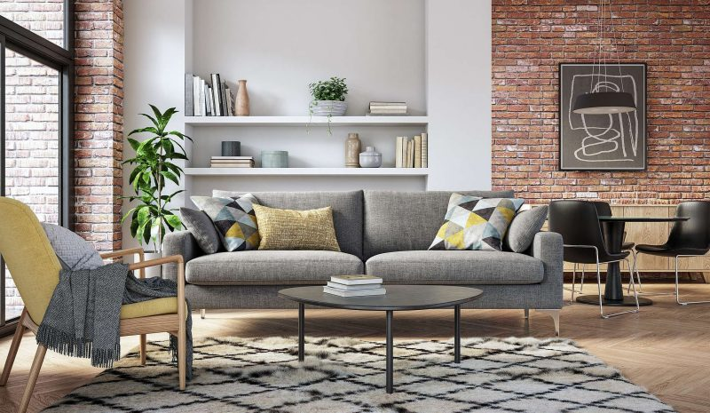

Sente-se e relaxe!
É um dos prazeres simples da vida e é tudo uma questão de conforto pessoal. Com um sofá e uma poltrona, todos da família podem se sentir confortáveis. Temos todos os tipos de sofás aconchegantes à sua escolha.